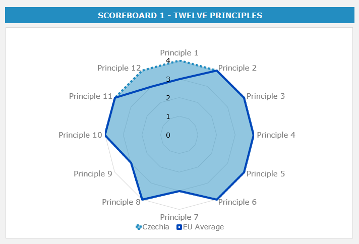
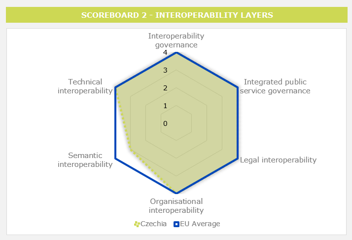
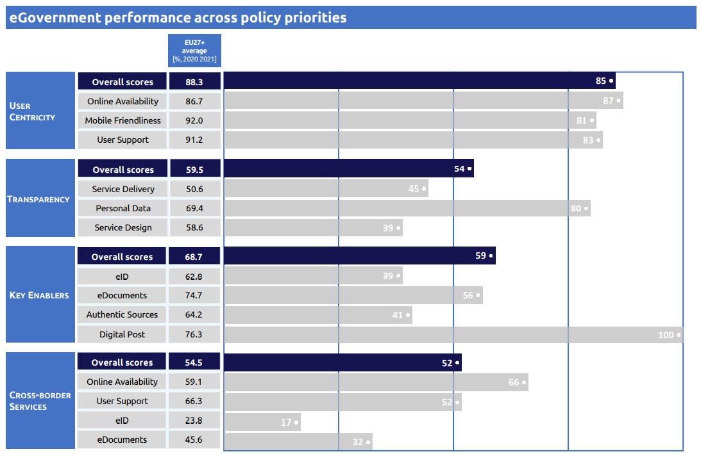
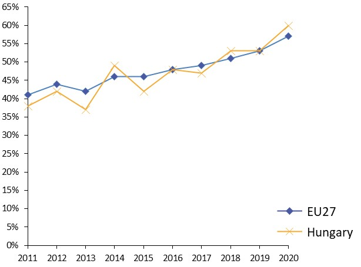
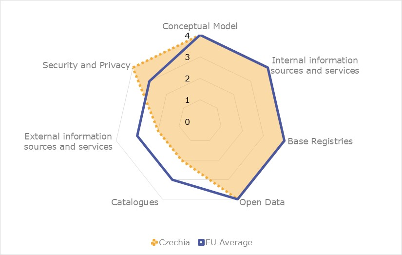

ISA2


Digital Public Administration factsheet 2022
Czech Republic
Table of Contents
1 Country Profile 4
2 Digital Public Administration Highlights 10
3 Digital Public Administration Political Communications 13
4 Digital Public Administration Legislation 22
5 Digital Public Administration Governance 28
6 Digital Public Administration Infrastructure 32
7 Cross-border Digital Public Administration Services 40

Country
Profile
1
Country Profile
Digital Public Administration Indicators
The following graphs present data for the latest Generic Information Society Indicators for Iceland compared to the EU average. Statistical indicators in this section reflect those of Eurostat at the time the Edition is being prepared.
Interoperability State of Play
In 2017, the European Commission published the European Interoperability Framework (EIF) to give specific guidance on how to set up interoperable digital public services through a set of 47 recommendations. The picture below represents the three pillars of the EIF around which the EIF Monitoring Mechanism was built to evaluate the level of implementation of the EIF within the Member States. It is based on a set of 71 Key Performance Indicators (KPIs) clustered within the three main pillars of the EIF (Principles, Layers and Conceptual model), outlined below.

Source: European Interoperability Framework Monitoring Mechanism 2021
For each of the three pillars, a different scoreboard was created to breakdown the results into their main thematic areas (i.e. the 12 principles of interoperability, the interoperability layers and the components of the conceptual model). The thematic areas are evaluated on a scale from one to four, where one means a lower level of implementation and 4 means a higher level of implementation. The graphs below show the result of the third EIF Monitoring Mechanism data collection exercise for Czech Republic in 2021.
Source: European Interoperability Framework Monitoring Mechanism 2021
The Czech Republic’s results in Scoreboard 1 show an overall very good implementation of the EIF Principles, scoring above the European average for Principles 1 (Subsidiarity and Proportionality) and 12 (Assessment of Effectiveness and Efficiency). Areas of improvements are concentrated in the Principles 7 (Inclusion and Accessibility) and 9 (Multilingualism) for which the score of 3 shows an upper-medium performance in the implementation of corresponding recommendations. Particularly, the accessibility of public services to all citizens (Principle 7 – Recommendation 14) and the use of information systems and technical architectures that cater for multilingualism when establishing public services could be bettered to reach the European average of 4 for Recommendations 14 and 16.
Source: European Interoperability Framework Monitoring Mechanism 2021
The Czech results for the implementation of the interoperability layers assessed for Scoreboard 2 shows an overall good performance with scores of 3 and 4. Potential areas of improvement to enhance the country’s implementation of the recommendations under Scoreboard 2 are concentrated in the area of semantic interoperability. More specifically, the score of 1 for Czech Republic in Recommendation 30, declaring that data and information should be perceived as a public asset that should be appropriately generated, collected, managed, shared, protected and preserved lowers the overall semantic interoperability result for Czech Republic.

Source: European Interoperability Framework Monitoring Mechanism 2021
Czech Republic’s scores assessing the Conceptual Model in Scoreboard 3 show an overall good performance in the implementation of all recommendations, in particular for security and privacy where the country scored higher than the EU average. However, some improvements can be made in implementing recommendations related to the catalogues as well as in the area of external information sources and services both of which received a score of 3. Precisely, the lack of catalogues of public services, public data, and interoperability solutions put in place with common models describing them (Catalogues - Recommendation 44) and the low use of external information sources and services while developing European public services (External information and services – Recommendation 45) hinder the overall Czech score on the conceptual model.
Additional information on Czech Republic’s results on the EIF Monitoring Mechanism is available online through interactive dashboards.
eGovernment State of Play
The graph below presents the main highlights of the latest eGovernment Benchmark Report, an assessment of eGovernment services in 36 countries: the 27 European Union Member States, as well as Iceland, Norway, Montenegro, the Republic of Serbia, Switzerland, Turkey, Albania and Macedonia (referred to as the EU27+).
The study evaluates online public services on four dimensions:
- User centricity: indicates the extent to which a service is provided online, its mobile friendliness and its usability (in terms of available online support and feedback mechanisms).
- Transparency: indicates the extent to which governments are transparent about (i) the process of service delivery, (ii) policy making and digital service design processes and (iii) the personal data processed in public services.
- Cross-border services: indicates the extent to which users of public services from another European country can use the online services.
- Key enablers: indicates the extent to which technical and organizational pre-conditions for eGovernment service provision are in place, such as electronic identification and authentic sources.
The 2022 report presents the biennial results, achieved over the past two years of measurement of all nine life events used to measure the above-mentioned key dimensions. More specifically, these life events are divided between seven ‘Citizen life events’ (Starting a small claim procedure, Moving, Owning a car, Health measured in 2021, and Career, Studying, Family life, measured in 2020) and two ‘Business life events’ (Regular Business Operations, measured in 2021, and Business start-up, measured in 2020).

Digital Public Administration Highlights
2
Digital Public Administration Highlights
| Digital Public Administration Political Communications |
On 6 January 2022, the government of Petr Fiala approved the final version of the Policy Statement of the Government of the Czech Republic for the coming period. Digital transformation of public administration remains among key national priorities.
In 2022, several initiatives of the Digital Czech Republic Programme focus on the National Open Data Catalogue, as well as the further interconnection of public databases in line with the vision of the interconnected data pools of the public administration. In this regard, since February 2022, the government authorities at all levels have to publish their digital bulletin boards in the open data format.
As part of the national cybersecurity strategy for the health sector, the National Cyber and Information Security Agency (NÚKIB) and the Ministry of Interior prepared, in February 2022, the recommendation for health care providers on minimizing two types of specific cyber threats based on actual situation.
 | Digital Public Administration Legislation |
In September 2021, the government adopted the Act No. 325/2021 Coll., on electronisation of the health care to ensure the interoperability of different eHealth solutions at national and cross-border level, as well as to safeguard the quality of eHealth services provided by the State.
On February 1, 2022, the Act No. 261/2021 Coll. entered into force amending over 160 legal regulations and contributing to faster digital transformation of national public administration.
By 31 December 2022, the draft proposal of the Act on the national spatial data infrastructure will be submitted to the government by The Ministry of Interior.
| Digital Public Administration Governance |
Following its policy statement and in order to support implementation of the Digital Czech Republic Programme and the Czech Republic's Innovation Strategy, the government plans to introduce several changes into the current digital public administration governance by 2023. These changes should facilitate strategic focus and data-based decision making in public administration, efficient involvement of stakeholders in policy design process, implementation of the whole-of-government approach, as well as better sharing and re-use of available capacities across public administration.
In this regard, in March 2022, Czech Republic and the OECD launched their work on the Public Governance Review, which should be finalised by 2024.
| Digital Public Administration Infrastructure |
In 2021, the Ministry of Industry and Trade, in cooperation with the relevant ministries (the Ministry of Finance, the Ministry of Labour and Social Affairs, the Ministry of Health), launched standard single registration forms, for legal persons and for natural persons respectively. The Single Registration Form replaces number of different forms entrepreneurs had to fill in the past when starting up or conducting their business. The form can be filled in on-line via web application SRF or JAVA application. It can be also accessed from the Citizen's Portal.

Digital Public Administration Political Communications
3
Digital Public Administration Political Communications
Specific political communications on digital public administration
Digital Society and Value-Based Digital Government as a Re-affirmed Priority of the New Government
In the course of 2022, the Czech Republic continued to implement digital government initiatives under its Digital Czech Republic government programme, in line with commitments of the Berlin Declaration on Digital Society and Value-Based Digital Government. In its policy statement, the new government of Petr Fiala reaffirmed digitisation as a national priority and outlined key initiatives for the coming period, such as finalizing the implementation of the Act on the Right to Digital Services, the creation of a central coordination team to support the digital transformation of central and local administrations, speeding up digital skills development and capacity building. Digital transformation efforts will focus on digital government services, transparency, cybersecurity, connectivity and network development.
The role of the Deputy Prime Minister for Digitalization was established, for which Ivan Bartoš was nominated. In order to ensure that multiple aspects of innovation and successful digital transformation are taken into account, Mr. Bartoš set up the Czech Digital Team, an independent advisory board on digitalisation.
Digital Czech Republic Programme
This whole-of-government digital transformation programme continues to be an umbrella platform for the cross-sector digitisation of public administration. The programme focuses on three main areas: the digital transformation in the context of a single digital market (the Czech Republic in the Digital Europe), the Digital Economy and Society, and the Information Strategy dealing with the State’s information and communication technology (ICT) infrastructure and digital government. The implementation plans of the programme are updated on an annual basis. Among the priority projects there are the Base registries 2.0, the modernisation of the public administration portal and its transactional part, the Citizen's Portal, the generational technological change of the Czech POINT system, as well as further interconnection of public registries and databases branded as the interconnected data pool. In the 2021-2027 programming period, the eGovernment development will be co-financed by the Integrated Regional and Operational Program. The Digital Czech Republic Strategy is fully compliant with the Innovation Strategy of the Czech Republic 2019-2030, which has a broader scope. In the context of the COVID-19 pandemic and the National Recovery Plan preparation, successful digital initiatives are viewed as an important factor for future resilience and competitiveness. National digital priorities include data-based digital government, digital skills, cybersecurity and human-centric innovations.
Innovation Strategy of the Czech Republic 2019–2030
Political leaders recognise the complexity of digital transformation and the need for a well-coordinated approach to deal with challenges and opportunities that come with it. Teams of government experts, private sector representatives and other stakeholders work closely on defining proper approaches to delivering the needed results. Negotiations and intensive communication take place in order to progress towards priorities set in the Innovation Strategy of the Czech Republic 2019–2030. The Strategy aims to make the Czech Republic one of the most innovative countries in Europe by 2030. In addition to the initiatives focusing on digital government and services, the Strategy includes eight other strategic pillars, namely: funding and evaluation of R&D, polytechnic education, national start-up and spin-off environment, innovation and research centres, smart investment, intellectual property protection, mobility and construction environment, and smart marketing.
Action Plan on Administrative Burden Reduction 2019–2022
The government Plan on the Systemic Reduction of Administrative Burden for Entrepreneurs for the period 2019–2022 is a joint initiative of the Ministry of Industry and Trade, the Ministry of Finance, the Czech Statistical Office and other relevant administrations. Several initiatives were successfully finalised, such as bringing together on a single platform all forms used by businesses when interacting with the public administration (single point of contact), as well as making it easy for entrepreneurs to find relevant information on legal obligations on one comprehensive platform. Also, the 2021 population census has been carried out online due to re-using data available in government registries. The implementation of the Administrative Burden Reduction Plan is monitored through a dedicated dashboard.
Client-Oriented Public Administration 2030
The Client-Oriented Public Administration Strategy aims to create a client-oriented public administration based on five strategic goals: increase the quality and availability of services, improve the effectiveness of the public administration system and institutions, increase the competence of human resources and facilitate citizen information and participation. To achieve these goals, the Strategy uses a wide array of tools, e.g. reorganisation of State administration in the territory, better communication with citizens, improved horizontal coordination of State administration, greater emphasis on evidence-informed policymaking, and support for innovation.
Interoperability
Guidelines for Interoperability
The national interoperability framework currently supports legislative, organisational, technical and semantic interoperability in compliance with the European Interoperability Framework. The cooperation between the Chief Architect of eGovernment and the IMAPS project team of the European Commission resulted in the Czech version of the tool, which makes it more accessible for architects when designing interoperable government digital services. The guidelines for interoperability are published and maintained by the Chief Architect of eGovernment on the dedicated webpage. The key cross-sectoral interoperability issues are approached by the Committee for Architecture of the Government Council for Information Society.
Interoperability Initiatives
The Chief Architect of eGovernment at the Ministry of Interior, together with the sectoral Chief Information Officers, continue their work on improving all levels of interoperability of existing and soon-to-be-implemented digital services, all within the context of the national interoperability framework, adopted by the Government Resolution No. 629/2018. The Chief Architect regularly updates online guidelines in order to support the implementation of the government ICT strategy. The representatives of central, regional and local administrations can consult a number of important interoperability resources available at the website dedicated to the eGovernment architecture. These include:
- Legislative framework;
- The Public Administration ICT Governance description ;
- The eGovernment Glossary;
- The National Architecture Framework;
- The National Architecture Plan; and
- A Knowledge Base.
Recently, a Study on the public administration portals federation from the user's perspective has been published to provide common understanding of the benefits of the portal federation, the mandatory functionalities of national government portals, rules & conditions for their successful federation, the description of the to-be state as well as the a gap analysis related to the federation of Citizen's portal and a number of other government and private portals with the objective to improve user experience.
Cross-border interoperability continues to be a government priority, with current good practice examples in the domains of social security, taxation and health care. The use of the TESTA-ng network for the secure cross-border information sharing in the context of specific European Union policies is yet another example for future interoperability initiatives.
With the aim to make digital government services more accessible for citizens who prefer to use different eID means, the National Identity Authority provides technical support for a number of interoperable eID solutions.
Key enablers
Access to public information
Czech Republic 2030
Improving the access to public information is one of the nation’s priorities. The Czech Republic 2030 Initiative sets a strategic framework for the long-term development of the country, including open data, among its key objectives. In 2022, the National Open Data Coordinator has organised a number of events to further promote and support data‑based digital government implementation.
Digital Czech Republic
In 2022, several initiatives of the Digital Czech Republic Programme will focus on the National Open Data Catalogue, as well as on the further interconnection of public databases, in line with the vision of the interconnected data pools of the public administration. One of the main drivers behind these initiatives was the adoption of Regulation (EU) 2018/1724 establishing a single digital gateway and the national Act on the Right to Digital Services. A new mandatory open standard for the code lists has been published by the National Open Data Coordinator's team. Also, since February 2022, the government authorities at all levels have to publish their digital bulletin boards in the open data format. The open government standard for bulletin boards is provided in the National Open Data Catalogue portal and the administrators can use testing application to ensure interoperability.
eID and Trust Services
No political communication has been adopted in this field to date.
Security aspects
National Cybersecurity Strategy of the Czech Republic
The Czech Republic’s approach to cybersecurity is based on an effective cooperation between all relevant stakeholders, both at national and cross-border level. The national cybersecurity ecosystem is described in the National Cybersecurity Strategy for the 2021–2025 period. This Strategy was designed by the National Cybersecurity Agency (NÚKIB) and was approved by the government in November 2020.
The Cybersecurity Strategy pays particular attention to securing digital society and public administration by regularly performing coordinated risk analyses, whose results determine the necessary measures to put in place. The digital infrastructure is built to assure the compatibility of technologies used in different public administration domains. The Czech Republic supports the use of unified information channels that allow for secure data exchange. The resilience of the digital infrastructure under all conditions, as well as the availability of alternative methods when the State administration is not able to provide services digitally, are among the key principles of national cybersecurity.
Cybersecurity Strategy for the Health Sector 2021–2025
The national cybersecurity strategy for the health sector takes into account relevant strategic documents in the cybersecurity field, national government ICT strategy under the Digital Czech Republic programme, as well as the national eHealth strategy and the EU Cybersecurity strategy for the Digital Decade.
Two other recent initiatives provide central government support to health care providers in the area of cybersecurity: in 2020, experts from the NÚKIB, the National Agency for Information Technologies and from the Ministry of Interior jointly published the Minimum Security Standard for those organisations whose operations are not regulated by the Cybersecurity Act. In February 2022, the NÚKIB and the Ministry of Health prepared the recommendation for health care providers on minimizing two specific cyber threats based on the current situation.
Interconnection of base registries
National Architecture Plan
The National Architecture Plan describes the interconnected data pool and the way in which sectoral registries will share information in compliance with current legislation. In order to support a wider range of services and handle more and more transactions in the near future, inter-ministerial negotiations now focus more intensively on the need to upgrade older legacy IT systems. The plan was reinforced with the Act on the Right to Digital Services.
eProcurement
Strategy for the Digitisation of Public Procurement in the Czech Republic
The national Strategy for the Digitisation of Public Procurement focuses on the period 2021-2030. The Strategy describes vision, processes and benefits of introducing ICTs into public procurement. It covers the public procurement systems managed by the Ministry of Regional Development, i.e. the electronic public marketplaces, the National Electronic Instrument (NEN) and the Public Procurement Information System.
The Strategy emphasises interconnection of the eProcurement system with other government ICT systems and better re-use of eProcurement data. The number of NEN users has significantly increased in 2022 and so has the number of public procurement procedures carried out digitally.
Domain-specific political communications
eJustice Strategy
The Ministry of Justice continues to implement its eJustice strategy in alignment with the Act on the Right to Digital Services and the Digital Czech Republic government programme, which set the main course for the country’s digital transformation. The key objectives of digital transformation in the justice domain include efficiency, transparency, fairness of the decision-making process, easier access to rights and better law enforcement. The updated strategy takes into account the lessons learned during the COVID-19 pandemic, when the need for secure digital services and online access to court files became apparent.
GeoInfoStrategy 2020+
Geospatial data collection and sharing have an enormous value for planning and decision-making in various domains of the Czech Republic’s public administration. The current Strategy for the development of the spatial data infrastructure for the period 2021 onwards has been approved by Government Resolution No. 1313 of 12 November 2021. The strategy reflects the principles of public administration spatial information management agreed at EU level and in the Public Sector Information (PSI) Directive and the INSPIRE Directive, honouring international commitments in this domain.
The Ministry of Interior, supported by teams of experts from the Czech Office for Surveying, Mapping and Cadastre, and the Ministries of Defence, Transport, Environment, Agriculture, Finance and Regional Development work together on the draft proposal of the act on the national spatial data infrastructure, which has to be submitted to the government by 31 December 2022.
Digitalisation of SMEs
In March 2021, the country adopted a Strategy to support SMEs in the Czech Republic for the period 2021-2027, prepared by the Ministry of Industry and Trade. The proposed course of action should contribute to increased productivity and improved competitiveness, as well as to a better position in the global research, innovation and advanced technologies market. Along with easing SMEs’ access to finance and the market and a comprehensive digitalisation effort, the strategy includes various measures meant to promote the further development of SMEs. One of the strategy implementation plans will focus on raising public awareness on the benefits of digital transformation, increasing the use of digital tools and new technologies in daily business activities, ensuring the support of the Digital Innovation Hubs in the context of Digital Europe programme, and on ensuring a good quality digital infrastructure and high-speed internet connection.
Emerging Technologies
Artificial Intelligence (AI)
National Artificial Intelligence Strategy
The National Artificial Intelligence Strategy adopted in 2019 creates the conditions for coordinated activities related to human-centred innovations and the use of the AI technology by taking stock of the current situation, setting key objectives as well as defining the ministries and agencies responsible for the implementation of the Strategy. The implementation of the Strategy is supported by the National AI Observatory and Forum, established to identify legislative barriers, provide recommendations on how to overcome them, and develop ethical and legal guidelines on AI research, development and use. The AI Observatory and Forum provides a platform for relevant public consultations and contributes to the country’s involvement in EU-wide debates.
Another key factor for the successful implementation of the National AI Strategy is the cooperation between various stakeholders, including government representatives, researchers and the private sector. The Ministry of Industry and Trade is responsible for the coordination of the Strategy implementation, which is being done through the national AI Committee. In September 2021, the members of the AI Committee discussed the state of play of the EU draft regulation on AI ,as well as on the Digital Europe programme and the digital innovation ecosystem, including European digital innovation hubs and the AI TEFs.
Memoranda of Cooperation
In 2019 the national Chief Digital Officer, the Office of the Government and the Ministry of Industry and Trade signed the Memorandum of Cooperation with the AI Platform of the Czech Confederation of Industry.
The Minister of Industry and Trade also signed a Memorandum of Cooperation to support the establishment of the European AI Centre of Excellence. The Centre will coordinate and facilitate implementation of infrastructure, technology transfer into practice and cooperation with the private sector. The signatories from the academical sector are the Czech Technical University Prague, VSB-Technical University Ostrava, the Faculty of Mathematics and Physics of Charles University and the Czech Confederation of Industry.
Starting from January 2022, the Czech Republic takes part in the working groups of the Global Partnership for Artificial Intelligence (GPAI) as the country joined this platform at the end of 2021.
Distributed ledger technologies
Memoranda of Cooperation on Blockchain
In 2018, the Czech Republic signed a Memorandum of Cooperation on Blockchain. Consequently, awareness raising initiatives took place at various governmental and non-governmental platforms to better understand possible benefits of using distributed ledger technologies in the public sector. The recent analysis performed by the Blockchain Republic Institute discusses proposals for Czech regulatory changes needed to unlock the business potential of blockchain, especially in the field of international trade.
In 2020, the Czech Republic co-chaired the Policy Group of the European Blockchain Partnership together with Italy and Sweden.
Investments in the DLT research and implementation are planned in the national Recovery & Resilience Plan.
Big data
Digital Czech Republic Programme
Opportunities related to a better use of big data in public administration are addressed in the context of the Digital Economy and Society Strategy under the Digital Czech Republic Programme. The strategy defines focus areas and priority sectors for research and implementation of emerging technologies, such as transport, health care, industry, IoT, energy distribution and smart cities. The responsibility for implementation of relevant initiatives is shared by the Ministry of Industry and Trade (as a coordinator), the Ministry of Education, Youth and Sports, the Ministry of Finance, the Government Council for Research and Innovation and the Technology Agency of the Czech Republic.
An important prerequisite for a better cooperation with stakeholders in the field of big data, including academic and private sectors, is an on-going communication of the European data policies at all levels of public administration. To improve the general understanding of the potential of data for a society, the Government Office presented an overview of key elements of the European data policy in an easy-to-understand way, focusing on the future developments in this field.
Cloud computing
Cloud Computing Strategy 2016-2022
The Czech Republic continues to implement its national Cloud Computing Strategy 2016-2022. The Ministry of Interior coordinates national initiatives, including the task of implementing the national eGovernment Cloud. All relevant information and updates are available at the website of the Ministry. The eGovernment Cloud is a part of the National Architecture Plan described at the website of the Chief Architect of eGovernment.
Internet of Things (IoT)
Smart City Strategy
IoT technologies are part of the national Smart City and Industry 4.0 strategies, both being implemented, via several initiatives, under the Digital Czech Republic programme. The Smart City Strategy has been adopted with Government Resolution No. 441 /2021. Starting in 2023, the Ministry for Regional Development will present a progress report to the Government on key milestones of the strategy implementation plan. The Smart City strategy should be updated by 2026, based on the progress achieved. The meeting minutes of the Smart Cities Working Group are presented in the dedicated website.
High-performance computing
EuroHPC
In 2018, the Czech Republic signed the EuroHPC declaration, becoming the 14th country to participate in the joint national and European effort to build together world-class computing and data infrastructures in Europe. Starting form autumn 2022, the IT4Innovations National Supercomputing Centre will offer the first pan-European study programme focused solely on high-performance computing. The Czech Republic is a member of a consortium of European partners led by the University of Luxembourg, selected by the EuroHPC Joint Undertaking, following the EuroHPC-2020-03 call for project proposals.
High-speed broadband connectivity
5G Networks Strategy
To improve the connectivity in the country, the Ministry of Industry and Trade launched the Strategy on the Implementation and Development of 5G Networks in the Czech Republic. This Strategy targets the construction and development of infrastructures for high-speed networks. It presents the organisational, legal and financial aspects that can hinder the expansion of the digital economy of the country and highlights the importance of solid infrastructures for the development of eGovernment. This important initiative supports objectives of the Digital Czech Republic Programme and the national Innovation Strategy 2019-2030.
In March 2021, the Czech government approved its National Plan for the Very High Capacity Networks Development. The Plan aims to facilitate investments and define strategic procedures for the network construction. The Minister for Industry and Trade and the Minister of Transport will provide an implementation progress report annually, starting from June 2022.

Digital Public Administration Legislation
4
Digital Public Administration Legislation
Specific legislation on digital public administration
Implementation of the Act on the Right to Digital Services
The Act on the Right to Digital Services, the so-called ‘Digital Constitution’, provides for the gradual digitalisation of all public services which can be carried out online. According to the timeframe and technical specifications of the ongoing digitisation of public services through Government Resolution No. 84/2021, the Catalogue of Services of public administration and the Plan of digitalisation shall be fully implemented by 2025. The Chief Architect of eGovernment’s office at the Ministry of Interior developed the ‘Guidelines for the digitisation of public administration services planning’, which provide a methodology for central administrations to assist them in decision-making in the field of sustainability of the separately built self-service digital portals for their service domain.
The implementation of the Digital Constitution is also supported by several important digital initiatives that took place recently, such as the introduction of the eGovernment cloud and the Bank ID into Czech law.
“DEPO” Act
To complement the Act on the Right to Digital Services, the Czech Republic adopted Act No. 261/2021 Coll., amending certain laws related to the further digitisation of public authorities’ procedures. This legislative package amends more than 160 sectoral laws, with the aim to ensure better data sharing between public administrations and to simplify digital interaction between authorities and citizens. The law provides for the mandatory use of data mailboxes by all legal persons by 2023. Also, every citizen accessing the Citizen's Portal with their eID will be provided automatically with a data mailbox. The law also sets up the legal basis for simplifying driver control procedures. In the future, authorities should be able to remotely verify driving licenses directly in the central driver register, without the need for drivers to show their documents. The law also expands the scope of documents and information that should be published in open data format.
Interoperability
Acts on Public Administration Interoperability
In the Czech Republic, the interoperability among public administration systems and services is ensured by the legal framework, particularly by the Act on Public Administration Information Systems, the Act on Base Registries, the Act on Free Access to Information and the Act on Archiving and Records Management. This legislative framework is regularly amended to support the digital transformation of the government and society. Public administration bodies should also comply with sector-specific legislation in order to ensure interoperability of sectoral information systems and their alignment with the central digital infrastructure and the national digital strategy.
Key enablers
Access to public information
Act on Public Administration Information Systems
The Act on Public Administration Information Systems is a part of the interoperability framework for the public information systems of the country, providing rules for the long-term governance, effectiveness and cybersecurity of public administration systems. The Act defines the role of the Ministry of Interior as coordinator of the public systems’ governance, as well as the means to perform this role. The Government Portal, the National Network of the Czech Republic and the rules for performing the function of assisted public administration office (Czech POINT) are also covered by the Act, in addition to some of the internal operations of the IT systems of the public administration.
Act on the Accessibility of Websites and Mobile Applications of Public Sector Bodies
The Act on the Accessibility of Websites and Mobile Applications of Public Sector Bodies transposes the European Union (EU) Directive on the accessibility of the websites and mobile applications of public sector bodies. Web accessibility is included in the National Architecture Plan, as well as in the check-lists and documentation used by the Chief Architect of eGovernment during the ICT projects approval procedure.
Act on Free Access to Information
The Act on Free Access to Information transposes Directive (EU) 2003/98/EC on the re-use of public sector information (PSI Directive), introducing the obligation for public administrations to provide online access to information in open data formats.
This Act also establishes the legal basis for the National Open Data Catalogue as “public administration information system”, and for the Central National Platform for Public Administration Open Data. The National Open Data Catalogue is fully compatible with the EU Open Data Portal and accessible from the Public Administration Portal.
eID and Trust Services
Act on Electronic Identification
The Act on Electronic Identification (Act No. 250/2017 Coll.) codifies the rules applying to the use of ID cards with a chip, in line with EU directives. The system started to function on 1 July 2018 and is being supervised by the Ministry of Interior, which issued accreditations for service providers.
Act on Citizen Identity Cards
The Act on Citizen Identity Cards (Act No. 195/2017 Coll.) defines the role of the National Registers Authority and the National Identity Authority.
Act on Trust Services for Electronic Transactions
The Act on Trust Services for Electronic Transactions (Act No. 297/2016 Coll.) brought the Czech Republic closer to implementing Regulation (EU) 910/2014 on electronic identification and trust services for electronic transactions in the internal market (eIDAS Regulation). According to this Act, the Ministry of Interior must fulfil the tasks of a supervisory body with regard to qualified trust service providers.
Act on Bank ID
The Act on Bank ID came into force on 1 January 2021. The Act No. 49/2020 introduces Bank ID as yet another secure means of eID to access public services, putting banks in the scope of providing identification services. Bank customers use a familiar high-security bank authentication interface to access government portals in order to file tax returns, apply for a new driving licence or obtain statements of social security contributions.
Security aspects
Personal Data Processing Act
The Personal Data Processing Act (Act No. 110/2019 Coll.) incorporates the General Data Protection Regulation (GDPR) into the Czech legal system (Title I, II), provides for the Office for Personal Data Protection as an institution supervising compliance with the rules of the GDPR, and defines administrative offences in the area of personal data protection (Title VI), i.e. introduces a comprehensive basis for sanctions in connection with breaches of the General Regulation.
The Act also reflects other related European legislations (e.g. Directive (EU) 2016/680 of the European Parliament and of the Council of 27 April 2016 on the protection of natural persons with regard to the processing of personal data by competent authorities for the purpose of prevention, investigation, detection or prosecution of criminal offenses or the execution of criminal penalties, and on the free movement of such data, and repealing Council Framework Decision 2008/977/JHA).
Act on Cybersecurity
The Act on Cybersecurity (Act No. 181/2014 Coll.) establishes a set of powers and duties to enhance national cybersecurity, defining the mechanisms for an active cooperation between the private sector and the public administration to deal with cybersecurity incidents more efficiently. This Act focuses on the protection of critical infrastructure, which is important for the functioning of the State. More information on the Act on cybersecurity is available on the website of the National Cybersecurity Agency.
Interconnection of base registries
Act on Base Registries
The Act on Base Registries (Act No 111/2009 Coll.) regulates the legal, organisational, informational and partially technical interoperability aspects with regard to national base registries. Detailed technical interoperability issues are dealt with via supporting documentation and guidelines provided by the National Registers Authority.
The Act focuses on four base registries, i.e. the Registry of Natural Persons (ROB), the Registry of Legal Persons (ROS), the Registry of Territorial Identification, Addresses and Real Estates (RUIAN), and the Registry of Rights and Duties (RPP). It also provides a legal basis for the National Registers Authority, setting out its principal activities. The current provisions of the Act allow private sector access to base registries’ data, under specific conditions.
Act on the Right to Digital Services
The Act on the Right to Digital Services, approved in December 2019, regulates the right of natural and legal persons to be provided with digital services by public authorities and perform digital acts. The act is aligned with the National Architecture Plan on the interconnection of public administration systems.
eProcurement
Act on Public Procurement
The Act on Public Procurement (Act No. 134/2016 Coll.) transposes the relevant European Union legislation and provides for:
- Public procurement rules, including specific procedures prior to their award;
- The obligations of suppliers in the context of the award of public contracts, including the specific procedures prior to their award;
- Rules concerning public procurement information;
- Special conditions for invoicing for the performance of public contracts;
- Specific grounds for terminating public service contracts;
- A public procurement information system;
- A system of qualified suppliers;
- A system of certified suppliers; and
- A supervision system to monitor compliance with the Act.
eInvoicing legislation
The Act on Public Procurement (Act No. 134/2016 Coll.) transposes EU legislation related to public procurement, including Directive 2014/55/EU on electronic invoicing in public procurement.
Section 221 of the Act stipulates that contracting authorities shall not reject any electronic invoice issued in a format compatible with the European standard on electronic invoicing.
Domain-specific legislation
Act on Electronic Actions and Authorised Document Conversion
The Act on Electronic Actions and Authorised Document Conversion (Act No. 300/2008 Coll.) regulates the digital interaction of government bodies, regional public administrations, legal or natural persons acting on behalf of public administration, notaries, and court bailiffs with citizens and legal persons, as well as B2G, C2G and G2G digital interaction. In particular, the Act sets the rules and principles for the valid use of the Data Mailbox system and provides guidance on the authorised conversion of paper and digital documents to ensure their legal validity.
Act on Certain Information Society Services
The Act on Certain Information Society Services (Act No. 480/2004 Coll.) transposed the EU Directive on electronic commerce (2000/31/EC) into national law. The Act establishes the liabilities, rights and obligations of persons providing information society services and disseminating commercial communications.
Act on Health Services
The Act on Health Services (Act No. 372/2011 Coll.) defines the rules for the treatment, identification, content and structure of medical documentation. The legal provisions cover the following issues: conditions for keeping medical documentation purely digital, ICT features for records keeping, and rules for the update, archiving and authorised conversion of paper-based and digital versions of the documentation. The Act also defines rules for the cross-border patient summary exchange through the National Contact Point for eHealth services.
The eHealth Act
In September 2021, the government adopted Act No. 325/2021 Coll., on the digitalisation of health care to ensure the interoperability of different eHealth solutions at national level, as well as to safeguard the quality of eHealth services provided by the State. The Ministry of Health will be responsible for the interoperability of eHealth solutions, publishing standards for the data sets formats, and ensuring cybersecurity of medical information.
Emerging technologies
Artificial intelligence (AI)
No legislation has been adopted in this field to date.
Distributed ledger technologies
No legislation has been adopted in this field to date.
Big data
No legislation has been adopted in this field to date.
Cloud computing
Cloud computing regulations
The use of cloud computing by the national public authorities in the Czech Republic is regulated by three main laws: the Act on Public Authority Information Systems, the Act on Cybersecurity and, since September 2021, also by the so-called ‘DEPO’, the Act No. 261/2021 Coll., amending certain laws related to the further digitisation of public authorities’ procedures. The Ministry of Interior administers the national Cloud computing catalogue, which is where service providers publish their offers for government cloud services. The Ministry of Interior is the authorised government body to make public procurement in this area.
The National Information and Cybersecurity Agency issued two Decrees in this respect – Decree No. 316/2021 Coll., on Certain Requirements for Registration in Cloud Computing Catalogue (the so-called ‘Entry Criteria’), and Decree No. 315/2021 Coll., on Security Levels for the Use of Cloud Computing by Public Authorities.
The Ministry of Interior provides guidelines for cloud computing service providers and for public administrations looking for cloud services on how to use the Cloud Computing Catalogue.
Internet of Things (IoT)
No legislation has been adopted in this field to date.
High-performance computing
No legislation has been adopted in this field to date.
High-speed broadband connectivity
No legislation has been adopted in this field to date.

Digital Public Administration Governance
5
Digital Public Administration Governance
For more details on the Czech Republic’s responsible bodies for digital policy and interoperability, its main actors, as well as relevant digital initiatives, please visit the NIFO collection on Joinup.
National
Deputy Prime Minister for Digitalisation and the Government Office
In March 2022, in order to ensure the implementation of the National Recovery and Resilience Plan, in particular its Digital Transition chapter, as well as to address digital government issues efficiently, the newly appointed Deputy Prime Minister for Digitalisation, Mr. Ivan Bartoš, introduced his vision of prospective changes in the digital public administration governance. These changes shall facilitate the implementation of the whole-of-government approach to digital transformation, efficient use of resources across administrations, as well as public sector innovations. The implementation of governance changes will impact established processes, roles and responsibilities of central administration bodies. It has to be supported by legislation and a general commitment from stakeholders. The Deputy Prime Minister plans to have them implemented by 2023.
The EU Applied Policies Department of the Government Office manages initiatives in the field of AI and the European Data Economy. The Department is also responsible for the coordination of the European Digital Agenda within the state administration in line with priorities set by the Government of the Czech Republic. The Department coordinates national positions on horizontal topics and initiatives linked to the Digital Single Market and their promotion at European level. The Department is tasked with conducting public consultations in this field.
Ministry of Interior
The Ministry of Interior is responsible for policies and legislation related to the interoperability, governance and use of central information systems of public administrations and shared services, as well as for the monitoring of the compliance with the accessibility regulation across all public administrations.
The political responsibility lies with the Minister and the Deputy Minister of Interior for ICT. The eGovernment Department, the Chief Architect of eGovernment Office and the National Open Data Coordinator are also part of this Ministry. Other central Ministries are responsible for their sectoral digital government policies and the implementation of their digital services (while using central eGovernment shared systems and services).
The Ministry manages a number of central government information systems, such as the Data Mailbox (Datová schránka), the Czech POINT, the Government Portal, the Registry of Rights and Responsibilities (of public administrations) and the Registry of Contracts. The eGovernment Department acts as the technical administrator of the national identity scheme in compliance with the eIDAS Regulation, the national TESTA coordinator as well as the national supervisory body for web accessibility.
Government Departments and Agencies
Individual government departments and agencies implement digital initiatives falling within their respective areas of competence, as well as individual action plans decided at cross-governmental and departmental levels by domain area.
National Agency for Information and Communication Technologies
The National Agency for Information and Communication Technologies (NAKIT) provides conceptual development of critical communication infrastructure and secure solutions for shared government services. Among eGovernment projects implemented by the Agency are: national government network services, including interconnection with the TESTA network of European Commission, the eGovernment Security Operations Centre and the Citizen's Portal. NAKIT also ensures a secure communication and information environment for the national Integrated Rescue System and security forces operations.
State Treasury and Shared Services Centre
The State Treasury and Shared Services Centre (SPCSS) provides infrastructure, computing capacity, operation systems, databases and applications in its data centres, tailored to the needs of national public administrations, with an emphasis on a high level of security and availability of services. The ICT infrastructure service ensures the provision of necessary capacities and performance parameters with the same parameters as would be the case of ICT infrastructure operated on the customer's own premises (servers, storage, network connectivity, licenses, administration and supervision). SPCSS services comply with the Cyber Security Act No. 181/2014 Coll.
Ministry of Industry and Trade
The Ministry of Industry and Trade is responsible for the broadband development and the Digital Economy and Society initiatives under the Digital Czech Republic Programme. Additionally, the Ministry of Industry and Trade leads the implementation of the Single Digital Gateway Regulation, in co-ordination with the Ministry of Interior.
Government Council for Information Society and Government Council for Public Administration
The Government Council for Information Society and the Government Council for Public Administration are two expert advisory bodies providing a platform for the coordination of national digitisation efforts. Both Councils perform the role of permanent advisory, initiation and coordination body to the government.
Subnational (federal, regional and local)
Regional Public Authorities and Municipalities
In the Czech Republic, the public administration and the management of public services are decentralised. 14 regions and 6 258 municipalities use central eGovernment infrastructure and services, while also providing their own digital services to citizens. As such, regional and municipal authorities are responsible for defining eGovernment policies and strategies within their respective spheres of competence, while a common approach is defined by the National eGovernment Strategy. In addition, the national Association of Regions and the Union of Towns and Municipalities develop complementary strategies and promote the exchange of best practices among their members.
Union of Towns and Municipalities of the Czech Republic
The Union of Towns and Municipalities of the Czech Republic undertakes support and advisory activities for Czech local authorities and promotes the interests of local administrations in relation to central executive and legislative bodies.
 Digital Public Administration Infrastructure
6
Digital Public Administration Infrastructure
Portals
National Portals
Public Administration Portal and Citizen’s Portal
The Public Administration Portal provides a single-window access to information and services that are electronically delivered from all government departments. The transactional part of the Portal, the Citizen’s Portal, requires a digital identification to access a number of fully automated digital services, such as the provision of extracts from the State base registries, the provision of information on the current status of the citizens’ submissions to the public administration, as well as the access to a personal archive of public administration-related documents. The Portal provides access to the ePrescription service and the digital services of the Czech Social Security Administration, the Financial Administration, the Cadastre and the Trade Licensing Register. To access digital government services, citizens can choose from several log-in options.
Czech Social Security Administration Portal
When dealing with the Czech Social Security Administration, citizens and employers can access the information registered in the administration databases, send requests online and receive replies digitally.
Specific online services are available for different groups of users. For example, services to individuals include online access to information on paid sick leaves during a person’s professional career, online access to information on health insurance payments for self-employed, and the online calculation of the retirement pension based on the completed insurance periods.
eTax Portal ‒ MOJE DANĚ
The eTax Portal offers a deadlines notification service based on a personal tax calendar, as well as pre‑filled electronic forms. Taxpayers can use several eID options to identify themselves online.
The English version of the eTax Portal of the Czech Financial Administration provides access to the necessary information on the national tax system and to the relevant electronic forms. The VAT Payers Register application allows to check the reliability of VAT payers and the registered bank accounts of VAT payers using their tax identification number.
National Contact Point for eHealth Portal ‒ NIX-ZD
The NIX-ZD Portal, co-financed by the CEF programme, is operated by the Vysočina Region, which was entrusted by the Ministry of Health to act as a NCPeH. The portal provides information, guidelines, technical interface and support for the deployment of cross-border eHealth services in the Czech Republic.
The COVID-19 PortalThe COVID-19 Portal was launched by the Czech government in an effort to provide easily accessible key pandemic-related information and services and to support the resilience of society through these difficult times. The ‘life events’ section includes regularly updated guidelines on testing and vaccination, as well as information on the available financial support programmes and current measures to better cope with the pandemic situation.
Subnational Portals
Portal of the Union of Towns and Municipalities of the Czech Republic
The Union of Towns and Municipalities is a non-governmental organisation founded as an interest group. The main activity of the Union is promoting better legislation, effective public funding, as well as positive developments at regional level in the area of education, security, transport, social benefits and culture. The Union actively contributes to the work of the Council of European Municipalities and Regions, and other related organisations. Through its Portal, the Union also provides information on the Smart City project, co-financed by the European Union.
Electronic Portal of Regional Administrations - ePUSA
This portal provides an access to the portals of all regional administrations and municipalities with information and services relevant for their citizens and businesses. A number of local administrations’ portals are already federated with the national Citizen's Portal.
Networks
Public Administration Communication Infrastructure
The National Network of Public Administrations interconnects public administration bodies (e.g. Ministries, central administrations, regional authorities, municipal offices, labour offices, tax authorities and public libraries) and ensures secure and cost-efficient data and voice communications, as well as access to central information resources and shared services. Through the central services point of the national network, Czech government bodies are connected to the TESTA network infrastructure of the European Union to ensure the cross-border exchange of information and support related EU policies. The digital infrastructure of the Czech public administration is described in the National Architecture Plan.
Czech POINT Network
The Czech POINT Information System is a network of offices across the country and abroad that provide an assisted, one-stop access to a number of eGovernment registries and services. Through Czech POINTs, citizens can access all public records and obtain legally valid transcripts/extracts, as well as information statements from the national registers. Czech POINTs are primarily located at post, municipal authority and registry offices, as well as Czech embassies.
5G Networks
The implementation and the development of 5G networks in the Czech Republic continues in line with the national strategy approved with Government Resolution No. 35/2020. Selected operators were allocated frequencies for the operation of 5G networks, which they won in the auction at the end of 2020. In order to raise public trust in the 5G technology and to minimize concerns related to its implementation, the Czech Telecommunication Office prepared a Q&A section in their website to better explain the potential of 5G networks in the context of smart cities. In 2022, the Ministry of Industry and Trade organized 5Gthon, in which teams of experts presented their ideas of Smart Life, Smart Industry and Smart Governance solutions with the use of 5G networks.
Data Exchange
Data Mailbox System Portal
The Data Mailbox System is a national secure eDelivery solution. The Data Mailbox credentials can also be used for the electronic identification and authentication of government digital services users. In 2019, new features were added to the System, including mobile access. The Mobile Key ISDS application is available for Android and iOS systems.
The Interconnected Data Pool
The Chief Architect for eGovernment published a framework of principles, roles and responsibilities, operational rules, global architecture, as well as technical and process background to facilitate sharing of public administration data available in base registries, sectoral information systems and databases. The data sharing infrastructure of public administration includes sectoral “agenda information systems”, the system of base registries, the shared service information system and the reference interface. The further development of interconnected data pool is one of the key projects of the Digital Czech Republic programme.
eID and Trust Services
National Identity Authority Portal
The National Identity Authority (NIA) Portal is the portal of the national point for electronic identification and authentication. It provides information on how to establish a State-guaranteed digital identity and access personalised and secure digital government services. To ensure transparency and build trust in digital services, the Portal also explains all processes involved and provides necessary forms and guidance.
Digital Constitution
In order to provide more options to citizens to identify themselves online, the Czech Republic introduced several means of electronic identification to access the digital services of the government from the Citizen’s Portal, as well as sectoral websites. Currently available eID means include those provided by the State - such as the chip-based citizen identity card (eObčanka), the NIA ID (name, password and SMS), the digital mailbox ID service, as well as the services offered by private eID providers connected to the National Identity Authority (the National Point for Identification and Authentication – NIA), including several Bank ID providers. The Mobile eGovernment Key and the mojeID are also part of the National identification scheme under eIDAS.
The introduction of the Bank ID into Czech law supports the implementation of the Digital Constitution (Act on the Right to Digital Services).
eIDAS Node
The eIDAS Node of the Czech Republic is operated by the CZ.NIC Association, based on the contract signed with the National Registers Authority, with the State organisational unit which has legal status. The Czech Republic’s eIDAS Node is part of the overall architecture of electronic identification solutions in the Czech Republic. In the near future, the national eIDAS Node will be connected to the eIDAS Node of the European Commission to support the recognition of notified eID schemes by the central online collection system developed by the Commission for the purpose of the European Citizens’ Initiative. This will allow the use of notified eID cards as electronic identification means for the EU login.
eSignatures
The online personal identification and authentication of documents and the access to digital public services are based on electronic signatures. In compliance with the eIDAS Regulation, trust service providers are accredited by the government.
eID
When accessing digital government services, citizens of the Czech Republic can identify themselves using several electronic identification means, such as a chip-based identity card (eOP), the electronic identity provided by the National Identity Authority (NIA) based on the person’s name, password and the code sent via SMS or the Mobile eGovernment Key application based on the QR code. They can also use the eID means offered by private eID providers, including the Bank ID of several certified banks. In order to be able to fully take advantage of all benefits of the secure online interaction with the government, citizens can activate their own Data Mailbox service, which can be done online using any of the above-mentioned eID means. The national list of certified eID providers is available here. The up-to-date list of online service providers is published here.
Czech National Verification Authority
The Czech National Verification Authority (CVCA) is a public certification authority meeting the need to secure control systems accessing sensitive personal data on stored documents with biometric data. The aim of the CVCA is to provide certification services for public entities administering inspection systems. The CVCA certification policy stipulates the requirements relating to the activities, obligations and commitments of all participating parties that, directly or indirectly, come into contact with certification services or are dependent on them.
eProcurement
eProcurement Portal
The Czech Republic has a centralised eProcurement system based on a national platform managed by the Public Procurement and Public-Private Partnership Department of the Ministry for Regional Development. Contracting authorities are required to publish tender notices above the national threshold of EUR 76 000. The national platform is also mandatory for the purchases of ICT commodities and services.
Public Procurement and Concessions Portal
The Public Procurement and Public-Private Partnership Department of the Ministry for Regional Development has designed a Portal providing comprehensive and well‑organised information relating to public procurement. That way, the user can become acquainted with national and European laws, regulations and administrative provisions concerning public contracts and concessions. The Portal also features a new functionality, providing information on eProcurement at both national and European levels.
National Electronic Instrument
The NEN forms part of the strategy adopted by the government in June 2018 with Resolution No. 408, obliging selected contracting authorities to use the NEN for public procurement as from 1 July 2018. The NEN is a complex electronic tool for the administration of public procurement and concessions for all categories of contracting authorities. To date, 600 contracting authorities are required to use the NEN mandatorily, and 900 contracting authorities use the NEN on a voluntary basis, i.e. regions and municipalities. The implementation of the NEN as a central eProcurement solution contributed to the transparency of public procurement, and to significant savings.
National eInvoicing Forum
Since 1 April 2020, all public contracting authorities have been obliged to accept eInvoices issued based on European standard EN 16931-1:2017. According to government Resolution No. 347/2017, the national standard for eInvoicing ISDOC/ISDOCX is also acceptable. In this context, the Czech National eInvoicing Forum (NMFČR) supports and encourages the implementation and use of the European standard, in compliance with Directive 2014/55/EU.
ePayment
Payment Gateway
The Ministry of Interior developed a dynamic procurement system allowing each public administration to carry out a simplified tender procedure for a payment gateway based on its needs and meeting a pre-defined criterion, that is that the payment gateway complies with the Gov.cz design system. The payment gateway will also have to comply with the criteria defined by the public administration.
Knowledge Management
Digital Map of the Public Administration
The State Administration of Land Surveying and Cadastre will operate the Digital Map of the Public Administration. The feasibility study took place in the Q1 of 2021 and the system should be operational by 2023. This digital solution will allow to pool data from various geographic information systems in one application. The project aims to facilitate the exercise of public administration and the accessibility of spatial data by the authorities and the public, in line with the smart administration concept, promoting an efficient and user-friendly public administration and the development of eGovernment in the country.
Cross-border platforms
Czech Base Registry of Territorial Identification, Addresses and Real Estate
RUIAN provides interoperable data and services to the European Location Framework (ELF) Platform. The ELF is a technical infrastructure providing various online services for locating, accessing and using reference location data from across Europe through a single point of access. In this context, RUIAN’s location data contribute to a new cross-border ELF product, the Cadastral Index Map.
Base registries
National System of Base Registries
The national system of base registries is described in detail in the ‘Factsheet: Access to Base Registries in the Czech Republic’ document prepared by the European Commission. In the context of the National Architecture Plan and interoperability framework, base registries infrastructure and operation are described on the website of the Chief Architect of eGovernment.
Emerging Technologies
Artificial intelligence (AI)
AI Czechia and City AI
The AI Czechia provides a networking platform for cooperation between research institutions, public administration and private sector entities involved in AI-related projects.
Prague AI and Brno AI represent national AI communities focusing on research, implementation and sharing information on AI related initiatives.
Distributed ledger technologies
No particular infrastructure in this field has been reported to date.
Big data
City Data Platforms
The cities of Prague and Brno have set up data platforms focusing on data areas with direct links to the specific needs of these towns, their citizens and visitors. The main goal of both projects is to promote a better use of the available data, support the implementation of the smart city concept, and facilitate continuous improvement in the quality of life and decision-making process. Both initiatives are based on the idea that understanding data and effectively using them is essential for decision‑makers.
The Prague Data Platform, called Golemio, works with big data generated by the smart city infrastructures (sensor data), as well as other public data. The platform service offers data in an open format that can be re-used by public and private sectors, as well as by individuals. Different cooperation scenarios are described on the website, promoting a better cooperation with data users and service developers.
The Data Portal of the Municipality of Brno provides data visualisations for several areas of interest, e.g. the economy and the labour market, health and the environment, transport, people and housing, education, technical infrastructure and safety. Data are also available for the metropolitan area of Brno. The relevant analyses, applications, articles and sociological research are also published on the Platform.
The city of Pilsen works with big data from traffic detectors for statistical purposes, as well as to calibrate their traffic model and improve the use of mobility data in public policies. As a partner in the European PoliVis project, Pilsen contributed with its experience of building a real-time traffic model for a faster and more effective decision making process.
Cloud computing
eGovernment Cloud
The use of cloud computing by the Czech public administration follows the national Government ICT Strategy and complies with the Government Resolution on the eGovernment Cloud and the Government Resolution that approved deliverables of the 1st project phase.
The State Treasury Shared Services Centre operates sectoral cloud computing services for the Ministry of Finance. The development of the government part of the eGovernment cloud is an ongoing project.
In April 2022, the Ministry of Interior approved the first four providers of the public part of the Government cloud.
Internet of Things (IoT)
No particular infrastructure in this field has been reported to date.
High-performance computing
IT4Innovations
The National Supercomputing Centre IT4Innovations operates the most powerful and state-of-the-art supercomputer systems in the Czech Republic and provides open access to these resources. It offers companies computer leasing, contract research and longer-term joint research projects at national and European level.
Research Centre for Informatics (RCI)
The Research Centre for Informatics (RCI) is a centre of scientific excellence in informatics and artificial intelligence. Besides high performing computing services, it provides services in the areas of computer vision, AI, machine learning, robotics, bioinformatics, computer graphics, embedded security and a theoretical computer science.
MetaCentrum project
The MetaCentrum project of the CESNET association operates distributed computing infrastructure consisting of computing and storage resources owned by CESNET and cooperating national academic centres. The MetaCentrum is responsible for the National Grid and its integration to related international activities, especially in the European Union.
High-speed broadband connectivity
No particular infrastructure in this field has been reported to date.

Cross-border
Digital Public Administration Services
7
Cross-border Digital Public Administration Services
Further to the information on national digital public services provided in the previous chapters, this final chapter presents an overview of the basic cross-border public services provided to citizens and businesses in other European countries. Your Europe is taken as reference, as it is the EU one-stop shop which aims to simplify the life of both citizens and businesses by avoiding unnecessary inconvenience and red tape in regard to ‘life and travel’, as well as ‘doing business’ abroad. In order to do so, Your Europe offers information on basic rights under EU law, but also on how these rights are implemented in each individual country (where information has been provided by the national authorities). Free email or telephone contact with EU assistance services, to get more personalised or detailed help and advice is also available.
Please note that, in most cases, the EU rights described in Your Europe apply to all EU member countries plus Iceland, Liechtenstein and Norway, and sometimes to Switzerland. Information on Your Europe is provided by the relevant departments of the European Commission and complemented by content provided by the authorities of every country it covers. As the website consists of two sections - one for citizens and one for businesses, both managed by DG Internal Market, Industry, Entrepreneurship and SMEs (DG GROW) - below the main groups of services for each section are listed.
Life and Travel
For citizens, the following groups of services can be found on the website:
Doing Business
Regarding businesses, the groups of services on the website concern:
The Digital Public Administration Factsheets
The factsheets present an overview of the state and progress of Digital Public Administration and Interoperability within European countries.
The factsheets are published on the Joinup platform, which is a joint initiative by the Directorate General for Informatics (DG DIGIT) and the Directorate General for Communications Networks, Content & Technology (DG CONNECT). This factsheet received valuable contribution from Ms. Alena Klímová (Ministry of Interior).
The Digital Public Administration factsheets are prepared for the European Commission by Wavestone.
An action supported by Interoperable Europe
The ISA² Programme has evolved into Interoperable Europe - the initiative of the European Commission for a reinforced interoperability policy.
The work of the European Commission and its partners in public administrations across Europe to enhance interoperability continues at full speed despite the end of the ISA2 programme. Indeed, enhanced interoperability will be necessary to unlock the potential of data use and reuse for improved public services, to enable cross-border collaboration, and to support the sector-specific policy goals set by the Commission for the future.
Interoperable Europe will lead the process of achieving these goals and creating a reinforced interoperability policy that will work for everyone. The initiative is supported by the Digital Europe Programme.
Follow us
@InteroperableEurope
@Joinup_eu

Interoperable Europe